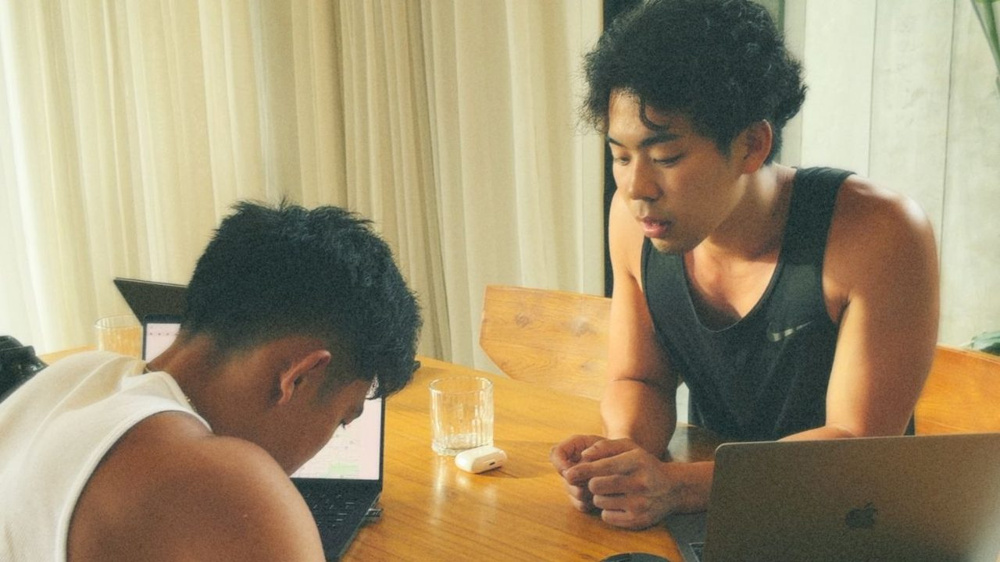
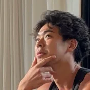
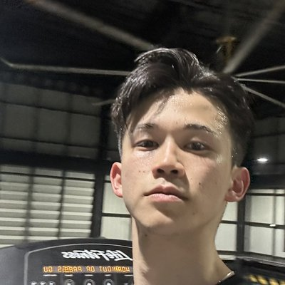
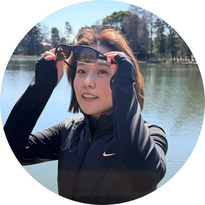
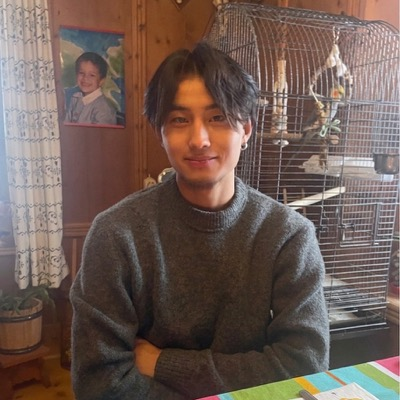
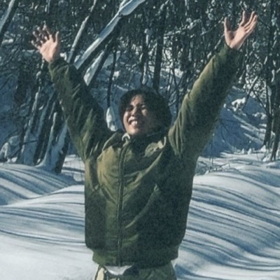
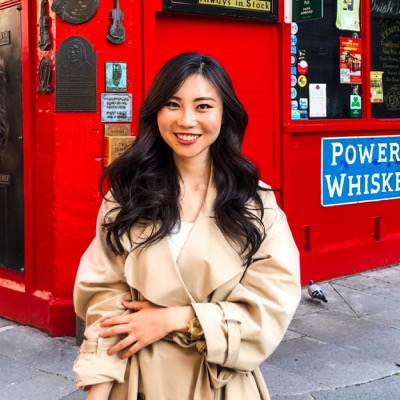
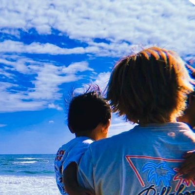

Shotaさん
売上約340万円。累計は1,000万円を超えました。
ポジションが定まらず、伸び方が頭打ちになっていたShotaさん。ポジショニングと事業の仕組みを一から整え直したことで、売上は約340万円に伸びました。その後も伸び続け、累計の売上は1,000万円を超えています。
コンテンツ、マーケティング、オファー、
セールス、AI、仕組み化まで。
いまのインターネットビジネスが
「実際にどう動いているか」を学ぶ。
KNCT Universityは、オンラインで「測れる価値」を生み出す力を身につける、90日間の実践型ビジネスプログラムです。
そして受講生たちも、同じ原則を使って
自分自身の結果を出し始めています。


ポジションが定まらず、伸び方が頭打ちになっていたShotaさん。ポジショニングと事業の仕組みを一から整え直したことで、売上は約340万円に伸びました。その後も伸び続け、累計の売上は1,000万円を超えています。

留学やワーホリを目指す人向けに海外挑戦コーチングを提供するクリエイターと、レベニューシェアで契約したHinaさん。山あり谷ありのサポートを続け、担当クリエイターの売上は600万円に。途中でクリエイターから契約の更新を頼まれて全体収益の30％で再契約し、さらにクリエイターの会社のCOOにも就任しました。「お金だけではなく、色々な人との出会いもあり感謝しかありません」。


「オペレーター」という言葉すら知らなかったTaiyoさん。KNCTでICPの見直し、プロフィールの整え方、CTAストーリー、クロージングまでを学び、英語やフィットネスのクリエイター4人と契約しました。成約が止まった時期にはICPとプロフィールを見直し、セミナーを開催。クロージングで使う言い回しを伝えて成約につなげ、レベニューシェアのみだった契約は固定費付きで更新されました。担当するクリエイター3人の売上は、累計で約131万円に。フォロワー約120人のアカウントでも成約を出し、「アカウントの規模とマネタイズの有無は、あまり関係ない」と実感しています。

KNCTにオペレーターとして入り、まず自分自身がクリエイターとなりインバウンドの観光事業を展開。KNCTでオペレーターマインドセットを学び、インスタで発信を始め2ヶ月で、インスタからの集客のみで月の売上100万円を達成。彼女の発信を見たインバウンド企業から、「オペレーターとしてインスタを手伝って欲しい」と連絡が来るようになりました。今後は自分自身のビジネスを伸ばしながら、今度はオペレーターとして他の人を支える方向で動き始めています。

オーストラリアで仕事とサッカーを両立しながら、自分でも発信を続けていたTanaさん。KNCTではICP（理想のお客様像）の絞り込み、商品設計、コンテンツ設計を学び、ライブのアーカイブも見返しながら、わからないことはコミュニティで質問し続けました。日本への移住を目指す外国人に関西弁を教えるクリエイターと契約し、ICPと商品を一緒に整理してコースを値上げ。担当クリエイターの売上は累計90万円になりました。KNCTの紹介で、フィットネスクリエイターとも契約しています。「失敗を失敗で終わらせず、一つひとつをデータとして捉えて改善し続けてきました」。


オンラインで売上を立てた経験がなかったSakikoさん。まずはパーソナルトレーナーである夫のアカウントで挑戦し、ICPの設計やCTAストーリー、セールスの見せ方を学びながら、Ebookで初めてのオンライン収益を上げました。その後はCTAストーリーやインスタライブから、プログラムの成約も生まれています。KNCT OSで紹介されたクリエイター2人とも契約し、産後ママ向けのプログラムでは、来店からセールスまでの流れを作って成約につなげました。担当したクリエイターの売上は合計約90万円。「クリエイターさんにすごく感謝されたことが幸せです」。
フィットネスのアカウントを新しく立ち上げた段階だったHuskyさん。発信の設計と、マネタイズまでの導線を組み直したことで、約80万円の売上につながりました。


ビジネスの経験も、SNSのアカウントもゼロから始めたYuukiさん。知人のクリエイターと契約してオペレーターとしてバックエンドを担当し、高単価と低単価でICPを分けて設計しました。国内外のプロサッカー選手向けの英語コーチングと、大学サッカー選手向けのコミュニティを立ち上げ、フォロワー0のアカウントから、高単価の商品だけで初月に80万円を売り上げました。コミュニティにも約20名が集まっています。その後も面談で何度も断られながら諦めず、ダイエット系のクリエイターとも契約しました。
DMを送っても、ほとんど返事が来なかったRikutoさん。ライブで学んだDMの送り方と面談の進め方を取り入れ、ChatGPTで面談を練習し、うまくいかなかったDMや面談は一つずつ振り返りました。中国語やスペイン語など、語学系を中心に複数のクリエイターと契約。中国語講座では添削ライブでもらったフィードバックをもとに値段設定を見直し、担当クリエイターの売上は59.6万円になりました。「クリエイターにする質問の質が、本当に高まりました」。
Instagramからの集客がゼロで、すべてをホットペッパーに頼っていた浜松のメンズ脱毛店と契約したNaorudoさん。動画制作と投稿、SNSから来店までの導線設計に加え、価格の見直しやキャンペーンの指示まで踏み込みました。インスタ経由の来店は月5〜10人に増え、ヒゲ以外の部位を追加するお客様も増加。店舗の月の売上は2倍になりました。最初にICPを決めて一貫して狙うこと、ズレていたら組み直すことの大切さを実感しています。
日本語を教えるクリエイター2人と契約した、20代の男性メンバー。「日本語はある程度話せるが、ネイティブとの差に悩む人」に向けたコーチングを作り、約40万円の初収益につなげました。同い年のクリエイターと2人で喜び合えたことが、何よりうれしかったそうです。「クリエイターは、収益化の方法も自分の価値もわかっていないことが多い。だからこそ、オペレーターの存在は大事だと実感しています」。
オペレーターの仕事内容を、まったく知らない状態から始めたRikiさん。広すぎるICPを絞り込み、クリエイターの経験を活かした提案に組み直すことを学び、ボディメイク系や英語コーチ系など3人のクリエイターと契約しました。学歴に自信がない人向けの英語コーチングでは、担当クリエイターの売上が約24万円に。別のクリエイターのプログラムでも計15万円を売り上げ、オペレーターとして初めて自分の収益が発生しました。
オペレーターを目指しながら、「クリエイターのために、まず自分で試してみよう」とストーリーだけで小さく発信を始めた30代の女性メンバー。本業のサロン向け集客ツールにCTAから問い合わせが入り、SNS経由で約60万円の利益につながりました。特に反響が大きかったのは、セミナーで話している動画です。現在は臨床心理士のクリエイターと契約し、ゼロからアカウントを作っています。
「フォロワーが何万人もいる人には相手にされない」と思いながら、恐る恐るDMを送ったUtaさん。実際に話してみると、小物作家のそのクリエイターも、マネタイズの方法がわからず一人で悩んでいました。レベニューシェアで契約し、低単価で受けていたPR案件を見直すことに。提案書の作り方と交渉の仕方を一緒に準備し、企業の悩みを投稿でどう解決できるかを示して、高単価での契約をまとめました。


高校生の頃からファンとして見ていたクリエイターのオフ会に、運営側として参加したRyomaさん。イベントの売上をサポートし、自分も報酬を受け取りました。「好きだったクリエイターと仕事ができて、お金もいただける。夢のような職業です」。
KNCTで「フォロワーを集める → 生徒を持つ → 商品を設計する」という順番で考え、動くことを身につけたMayuさん。TikTokのフォロワーは1万人になり、ミャンマーの日本語学習者向けのプライベートレッスンで月5.3万円の売上を作っています。次はグループレッスンを作り、時間単価を上げていく予定です。
KNCTに入ってから、Whopでのコミュニティ形成を進めることができました。外資エアライン面接対策の発信で、競合が有料化している情報も積極的にGIVEする方針で運用。少しずつ信頼が積み上がり、個別相談会の参加率も大きく伸びました。「データ」と「情報」を区別する発信の考え方が、結果につながったと感じています。

Ayaさん一度は「子育てが忙しい」と断られましたが、しばらくして相手から再び連絡がありました。1回目の面談では話を聞くことに集中し、添削ライブで方向性を固めてから、2回目に提案して契約へ。一度断られても終わりではないことを学びました。
プロ野球選手向けの英語コーチなどと契約。時間が取れずに悩んでいたクリエイターには、編集や運用まで担う形で提案し直し、レベニューシェア50％で合意しました。

KaiさんKNCT OSで紹介されたクリエイターと初めての契約を結び、続いてサウンドバス養成コースを持つクリエイターとも、固定費＋レベニューシェアで契約しました。
リハビリで良くならなかった膝の痛みを改善するプログラムを持つトレーナーと契約。添削ライブで取り上げた英語クリエイターとも契約しました。
先の見えない不安と戦いながら、20〜30代男性向けのフィットネスコーチ、スペイン移住を目指す人向けのスペイン語クリエイターと、レベニューシェア30％で契約しました。
フィットネス・モチベーション系のクリエイターと、レベニューシェア30％で契約。「どこに住んでいてもできる」ことを、自分自身で証明しました。
自身の整体院のお客様だった国際薬膳師が、「集客も商品設計もわからない」と悩んでいました。KNCTで学んだ型を使い、お試しサポートから関係を作り始めています。
心から共感できるクリエイターと、目標達成後にレベニューシェア30％を受け取る形で契約しました。
日々のライブで学んだことを活かし、クリエイターのサービス内容から一緒に作る形で、レベニューシェア30％の契約を結びました。
「肌は自信につながる」というクリエイターの考え方をインスタに反映させるため、アカウントの設計から一緒に始めています。
1on1ミーティングでもらったアドバイスをもとに、ラグビー留学をする選手向けの英語コーチと事業を立ち上げ。オペレーターを担当しています。
なかなか契約に繋がらない時期も、毎日の添削ライブで様々なアカウントの事例から学び続け、レベニューシェア30％で初めての契約を結びました。
DMから面談、契約までを自分で進めました。添削ライブでヒントをもらい、わからないことを一つずつ振り返りながら、不安を減らしていきました。
体型にコンプレックスがあり、隠す服を選んでしまう20代後半の女性に向けて、オンラインのフィットネスコーチングをクリエイターと一緒に作っています。
自身も発信をしているKeitoさん。フィットネス系のクリエイターとカフェで会い、オペレーターの考え方を話したところ「ぜひ一緒に組んでほしい」と言われ、契約に至りました。
※ 掲載している実績は個人の成果であり、すべての方に同様の結果を保証するものではありません。成果は各自の取り組みや状況により異なります。
ほとんどの人は、インターネットビジネスが実際どう動いているのかを、教わったことがありません。
学校は教えてくれなかった。
会社もたぶん、教えてくれない。
そしてSNSには、
バラバラの答えが何千個も転がっている。
でも、それらは全部
ビジネスの「部品」。
ビジネスそのものではありません。
スキルを1つ知っていても、
つなげ方を知らない。
この「つなぎ目」を埋めるのが、KNCTです。
これが、インターネットビジネスの
本当の動き方。
KNCTは、このマシン全体を教えます。
クリエイターは、こんな状態でも——
——ビジネスとしては、弱いままのことがあります。
フォロワーは、
ビジネスじゃない。
再生数は、
売上じゃない。
注目は、チャンスをつくる。
ビジネススキルが、それをつかむ。
インターネットビジネスの仕組みがわかれば、
そのスキルの使い道は2つです。
クリエイターになる。パーソナルブランドを築く。コンテンツを作る。オーディエンスを育てる。オファーを作る。そして、集めた注目を顧客に変える。
インフルエンサーになる必要はありません。クリエイターや企業は、すでにオーディエンスを持っています。でも多くの場合、次のことがわかる人がいません。
注目の裏側にあるビジネスを、一緒に作れる人になる。
KNCTでは、この人を「オペレーター」と呼ぶことがあります。
でも、大事なのは肩書きではありません。
生み出す価値です。
解く価値のある問題を見つける。
その問題を解決するオファー、サービス、商品、仕組みをつくる。
コンテンツ、ストーリー、ポジショニング、メッセージ、セールスで、価値を相手に理解してもらう。
注目を、会話・顧客・売上に変える。
データと顧客の声から、何がうまくいき、何を改善すべきかを理解する。
KNCTが教えるのは、5つのコア領域です。
KNCTは、1つのスキルを教える
講座ではありません。
インターネットビジネスというマシン全体の
動かし方を教えます。
「ビジネス動画を見るのが上手い人」を
作る場所ではありません。
変えるとしたら、実行です。
情報は、商品じゃない。
変化こそが、商品です。
学ぶ。実践する。市場から反応が返ってくる。
その反応の意味を、私たちが一緒に読み解く。
修正する。そして、また実行する。
フレームワーク、レッスン、テンプレート、プレイブックを手に入れる。
現実の世界で使う。作る。組み立てる。声をかける。売る。問題を解決する。
メンター、ライブセッション、コミュニティ、そして実際の市場データから、うまくいっていない部分を特定する。
失敗するたびにゼロからやり直すのではなく、変えるべき変数だけを変える。
顧客。契約。売上。スキル。実績。
単発の成功を、再現できるスキルに変える。
多くの教育は、行き詰まった人にさらに情報を与えます。
でも、問題はたいていそこではありません。
うまくいかないとき、最初に聞くべきなのは——
やったことを、見せて。SHOW ME WHAT YOU DID.
失敗は、プロセスの終わりではない。
プロセスの中にある「情報」だ。
コンテンツを作る。会話を始める。オファーを組み立てる。声をかける。フィードバックをもらう。
「何がうまくいくか」を考えるのをやめて、証拠を集め始める。
前に進めない原因は、何か？
そのボトルネックを直す。
うまくいったことに集中する。オファーを磨く。実績をつくる。仕組みを作る。量を増やす。
最初の結果を、繰り返せるものに変える。
これらは、ただの機能一覧ではありません。
すべて「学ぶ → 実行 → フィードバック → 改善」の
ループを回すためにあります。
ヤッピング、フック、コンテンツ、ストーリーテリング、パーソナルブランド。
私たちが実際に使っているフレームワークで、ゼロから作らずにすぐ動ける。
教室の中の概念を、市場で使う。
学んでいることを、いま実際に作っているものに当てはめるサポート。
やり切るための伴走、つまずきの診断、そして次にとるべき一手の明確化。
周りにいるのは、作り、売り、学び、実行している仲間たち。
同じループを回している人が近くにいるから、次の一歩が止まらない。
大丈夫です。構造を最初から教えます。
ビジネスは魔法じゃない。学べるスキルの集まりです。
人を理解する。問題を見つける。解決する。解決策を伝える。オファーを出す。顧客を得る。結果を届ける。改善する。繰り返す。それが、ゲームのすべてです。
なくても始められます。
自分で注目を育てることもできる。でも、すでに注目を持つ人の価値ある存在になることもできます。注目はあるのに——
そんなクリエイターがいます。その人たちの課題が、あなたのチャンスになる。
それを決めるのが、最初の7日間です。
誰を助けられるか。その人はどんな問題を抱えているか。あなたのどのスキルで解決できるか。この順番で考えれば、売るものは自然に決まっていきます。
ならなくていい。だから、道が2つあります。
自分で注目を集める道のほかに、すでに注目を持つ人の裏側でビジネスを伸ばす道があります。クリエイター本人より、裏側の方が向いている人も少なくありません。
全員を同じキャリアに押し込むことが目的ではありません。目的は、あなたを「価値ある人」にすること。
KNCTは、見るための講座ではありません。
一人で100時間の動画を見たいなら、KNCTはおそらく合っていません。情報は安い。実装は難しい。
KNCTの中心にあるのは、実行・フィードバック・診断・改善。学ぶ。やる。フィードバックをもらう。修正する。またやる。
誰かにいちいち指示されなくても、自分で価値を生み出せる人になるまで。
2026年だけ通用する小手先の戦術には、興味がありません。
でもビジネスには、いつの時代も
こんな人が必要です。
私たちが育てているのは、
そういうスキルです。
そのスキルで、自分のビジネスを作ってもいい。
誰かのビジネスを伸ばす力にしてもいい。
KNCT Universityは、
その両方を教えます。
いまの状況から、オンラインで測れる価値を生み出せる人になるまでの道のりを、一緒に整理します。面談では、こんなことをお話しします。
誇大な約束はしません。
コミュニティに入るだけで成功できる、とも言いません。